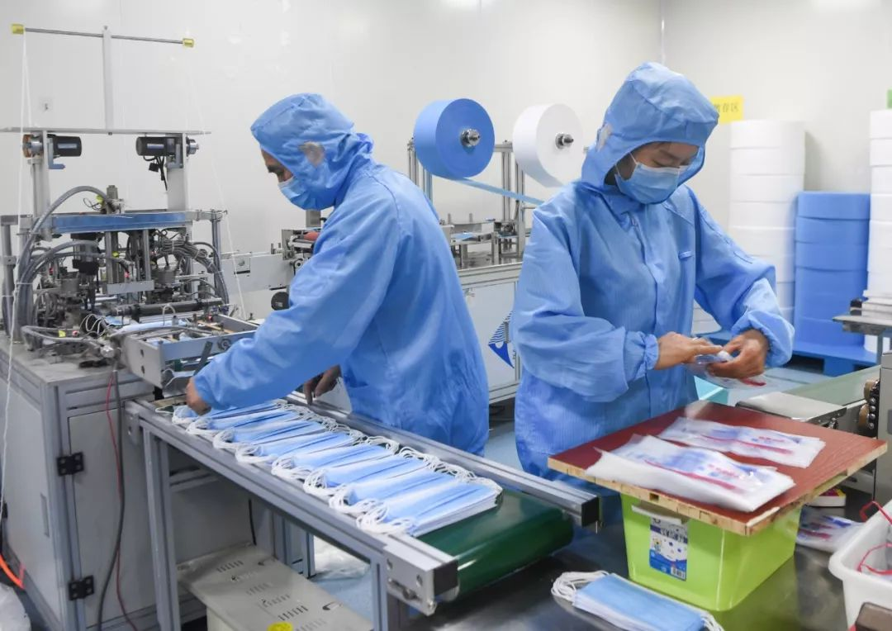

口罩每天产800万只，厂商疯狂加班生产
原文链接 备份链接 *************▲************* 广州南站提着大包小波的乘客，其中大部分人佩戴上了口罩。（南方周末记者 翁洹/图) 全文共*3883*字，阅读大约需要8分钟 中国是世界最大的口罩生产国，最大产能可 …
疫情防控“全国一盘棋”的关键时刻，各地政府应该在用工、原材料、物流等环节最大程度地给口罩企业提供支持，绝对不能画地为牢。

2月11日，工作人员在位于重庆市南岸区的宏冠医疗设备有限公司口罩生产包装车间内作业。作者：王全超 来源：新华社CNML图片
本文约2023字
预计阅读时间6分钟
中青报 · 中青网记者 王林
中国是全球最大的口罩生产国和出口国，年产量约占全球一半，为何口罩仍然十分紧缺？
口罩生产出来后，要走一个解析、消毒的流程，一般需要7~15天
工信部数据显示，我国口罩最大产能约为每天2000多万只，但因为春节假期和疫情影响，许多口罩企业产能未完全释放。
国家发展改革委社会发展司副司长郝福庆表示，截至2月3日，全国22个重点省份口罩产量已经达到1480.6万只，其中最紧缺的N95口罩达到11.6万只。“总体看，口罩产量呈现持续上升势头，尤其是防治一线急需的医用N95口罩，优先保障，增速更快。”郝福庆表示。
一些企业也“转行”生产口罩。富士康宣布其深圳龙华园区首次引入医用口罩生产线，并于2月5日试产，可日产10万个口罩。比亚迪也宣布，正调配资源着手防护物资生产设备的设计和制造，预计在2月17日前后量产出货口罩和消毒液，到2月底口罩产能可达500万只/天。
中国纺织品商业协会副会长兼秘书长、安全健康防护用品委员会会长雷利民表示，口罩分为医用、民用等许多种类和规格，虽然产品标准各有不同，但全国有相当大一部分口罩厂商都是民营中小微企业，甚至有不少都是“一户一厂”的灵活形式。受疫情和假期影响，这些小微厂商的产能还未完全释放，产能挖潜的空间还很大。
口罩从车间到用户手中也需要一个过程。中国医药集团董事长刘敬桢近日在接受媒体采访时表示，中国生产口罩的速度已经很快了，仅需0.5秒/只。然而口罩生产出来之后，还要走一个解析、消毒的流程，一般需要7~15天。
据介绍，医用口罩在上市前需要经过环氧乙烷灭菌处理。灭菌后，口罩上会有环氧乙烷残留，这是一种有毒的致癌物质，必须通过解析方式，使残留的环氧乙烷释放，达到安全含量标准，经检测合格后，才能出厂上市。“也就是说，大年初一加班生产的那批次口罩，可能这两天刚刚上市。”刘敬桢说。
“这些步骤都走完，工人才能到岗上班”
荆州思创科技开发有限公司是当地一家老牌口罩企业，曾多次参与国家应急救援的物资保障。从1月20日开始，荆州思创就在加班加点赶制KN95口罩。但因为假期调休和疫情防控的需要，有四五十名员工滞留在外地回不来，仅剩80名员工参与生产，每天工作十几个小时，目前日产KN95口罩为6万只/天，产能只恢复到原来的60%。因为疫情严重，荆州许多小区封锁禁止人员外出，车辆必须有通行证才能通行，导致80名员工中又有约20人不能上班。对于实在有复工需要的企业，有的小区要求，必须要开具健康证明才能出门上班。“所有这些步骤都走完，工人才能到岗上班。”公司负责人陈思敏说。
没办法，陈思敏只好安排公司3辆有通行证的车每天接送员工上下班。“我们呼吁口罩厂应该复产复工，但到了乡镇一级很多没有去执行，很多乡镇管理者就是关起门来不让走，说什么都没用。”雷利民说。
更让陈思敏觉得无奈的是原材料的运输问题。因为缺乏产业集群，荆州思创的口罩原材料、设备和包装基本都要从外省采购，但因为疫情影响，即便付出高于以往3倍的运费，大多数货车司机都不愿接他们的单子。
2月5日前后，他们好不容易找到一个司机愿意去浙江拉一批原材料回来。荆州市有关部门给办好了通行证，但在进入浙江时吃了闭门羹。“对方说不认我们这边开的通行证，不让下高速。”没办法，她又找到荆州市有关部门向湖北省政府请求帮助，通过湖北省政府联系浙江省有关部门，好一番沟通协调之后才予以放行。等到放行指令到达，货车司机已经在入浙的高速路口等了整整3天。当地政府想了很多办法，但也没办法解决物流运输的问题。“大家都不知道跨省的情况，不知道对方认不认我的通行证。”
陈思敏还提到，春节前他们就向广东东莞一家企业订购了2台口罩生产设备，但厂家迟迟没有发货，经过协调，2月7日才发来了一台。“厂商那边说，物流不顺，那边的政府也要求他们设备尽量不能往外卖。”
作为企业经营者，陈思敏最担心的还是投入和产出。2月8日，当地政府要求，为更好地防控疫情，员工必须集中住宿、集中隔离，这意味着她工厂里的四五十名员工每天光酒店住宿成本就要一两万元。而他们生产的KN95口罩仍然按照之前3元/个的价格定价，并由政府统一调拨。
员工假期上班要3倍工资，晚上加班要加班工资，每天一两万元的住宿成本，原材料也涨价了，物流政策也是一天一变，政府提供的补贴目前只有5000元慰问金，陈思敏坦言：“以前不存在的成本现在越来越多，以前的价格跟现在也没有可比性，但现在根本不是算钱的时候。”
雷利民建议，在口罩供不应求、疫情防控“全国一盘棋”的关键时刻，各地政府应该在用工、原材料、物流等环节最大程度地给口罩企业提供支持，绝对不能画地为牢，只为自己考虑。
中国青年报·中青在线出品
微信编辑 | 陈轶男

觉得好看请点这里
原文链接 备份链接 *************▲************* 广州南站提着大包小波的乘客，其中大部分人佩戴上了口罩。（南方周末记者 翁洹/图) 全文共*3883*字，阅读大约需要8分钟 中国是世界最大的口罩生产国，最大产能可 …
原文链接 备份链接 以下文章来源于AI财经社 ，作者AI财经社作者 开工前最忧伤的段子可能是，“今天戴着口罩去买口罩，口罩没买到，还损失了一个口罩。” 2月10日起，部分企业陆续复工，宅在家里即为国家做贡献的使命宣告终结。当下的主要矛 …
原文链接 备份链接 _ 2月10日这个周一，中国多个省市迎来了春节后第一个工作日，虽然比原定假期已推迟一周，但政府、企业和个人所面临的疫情防控压力都不小。当前，湖北省仍需要着力抓好疫情防控，其他地区也需要做好防控的同时有序恢复生产 _ …
原文链接 备份链接 一边是政府选定的工厂紧急扩大产能，另一边，一批主营出口的医用防护服工厂却因没有“内销”资质，被要求停产。 记者 | 肖文杰 编辑 | 王姗姗 医用防护服是目前武汉、湖北，乃至全国最紧缺的防疫医疗物资之一。而这一产品在 …
原文链接 备份链接 【财新网】（记者 孙良滋 实习记者 单镭婧）湖北仙桃市既是疫区，同时也是防疫物资口罩的全国主要生产地之一。过去一周，民用口罩的生产方面对仙桃市和湖北省两级政府完全不同的生产政策，坐了一趟过山车。 约2月1日起，仙桃 …